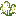

野生燕麦
Wild Oat
英文名: Wild Oat命名空间 ID:
farm_and_charm:wild_oat类型: 方块所属模组: [Let's Do] Farm & Charm资料检索: 🔎 在 MC百科 搜索「野生燕麦」所属标签
用于合成 (1)
farm_and_charm:drying[Let's Do] Farm & Charm

原始 JSON
{
"type": "farm_and_charm:drying",
"ingredient": {
"item": "farm_and_charm:wild_oat"
},
"recipe_type": "MEAT",
"result": {
"id": "minecraft:bone_meal",
"count": 1
}
}